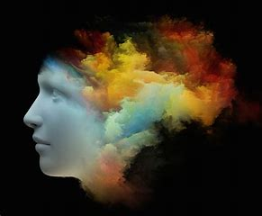
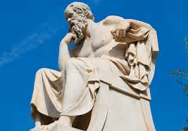
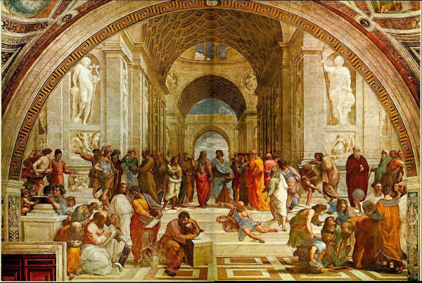

About Us
The International Society for Universal Dialogue (ISUD)
ISUD is a society of scholars, mostly philosophers, from many parts of the world, devoted to promoting international dialogue and the discussion of fundamental questions of universal concern, which affect all humanity, such as world peace, human rights, dialogical interrelations of diverse cultures, and preservation of the world ecology.
What role does philosophical thinking have to play in moving toward a more rational and more humane future?
What are ethical principles of dialogue?
How may one understand cultural diversity and universality?
How best to work toward a culture of peace?
What is the relationship between the basic liberties of individuals and the collective rights of cultural groups?
Is there a universal knowledge? If so, how may it be conceived?
Are there universal values?
How may one understand the variation and conflict of cultures and religions and politics?
What is intercultural communication?
Can dialogue among different worldviews lead to basic agreement?
What does ethics have to do with international affairs?
History of the ISUD
ISUD was founded in Warsaw, Poland in 1989. ISUD is a philosophical society dedicated to promoting international and intercultural dialogue among an ever-wider segment of humanity.
The main purpose of the society is to pursue, by means of scholarly work, the gradual realization of a decent, peaceful, and just world order. Towards this goal, ISUD produces biannual international conferences to facilitate an ethos of universal dialogue.
ISUD is committed to promoting philosophical discourse intended to encourage the emergence of a more decent and humane world order by promoting dialogue to actualize the highest and richest human values in all dimensions of life.
ISUD is a member of the International Federation of Philosophical Societies (FISP), is an international association of philosophers and scholars from a wide range of other disciplines (such as history, archaeology, pedagogy, anthropology, etc) devoted to promoting the discussion of such fundamental issues as world peace, social justice, human rights, and dialogical interrelations of diverse cultures.
Since 2004, the ISUD has been one of 103 full members of the FISP that is linked with the International Council for Philosophy and Humanistic Studies (ICPHS) and with UNESCO. The goals of the ISUD are very much in line with the main objectives of FISP, ICPHS, and UNESCO: namely, to promote philosophical education on a global scale, and to generate a greater awareness of the social and global problems that confront us in order to break through the impasse in which humanity finds itself in the early 21st century.